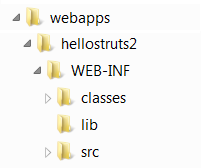

A Quick-Start Tutorial on Struts 2
Introduction
Structs, an open-source Apache project at http://struts.apache.org, is a MVC (Model-View-Controller) framework for creating user interfaces for Java web application. Struts is an extension of Java Servlets and JSP. Struts is in direct competition with JSF (Java Server Faces).
[TODO] struts functions, comparison of struts and JSF.
Develop and Deploy Struts Application on Tomcat
Before writing our first Struts program, I shall assume that you have installed and configured Tomcat server. I shall also assume that Tomcat is running on port 8080 and denote the Tomcat's installed directory as $CATALINA_HOME. (Otherwise, read "How to install Tomcat".)
I also assume that you understand basic Java server-side technologies such as Java Servlets, JSP (JavaServer Pages), and Java Web Applications.
Download the Struts Runtime Libraries
- Download the Struts runtime libraries from http://struts.apache.org. Select "Downloads" ⇒ "Releases" ⇒ Select the latest General Availability (GA) release, e.g., "Struts 2.1.8.1" ⇒ "Full Distribution" ⇒ "
struts-2.1.8.1-all.zip". - Unzip.
- The runtime libraries are kept in sub-directory "
lib", which includes 71 jar-files. To deploy Struts application in Tomcat, these libraries must be available to Tomcat. You could copy the selected jar-files into Tomccat's "lib" directory (i.e.,$CATALINA_HOME\lib), which will be available to all the web applications. You could also place the jar-files into a specific web context's "lib" directory, which will be available to only the particular web application.
Deploy and Run the Sample Applications Provided
The downloaded Struts package contains a few ready-to-deploy sample applications in directory "apps", in the form of war-files. In particular, a "blank" application template for which you can use to start writing your own codes. War-file (Web Application Archive) uses ZIP algorithm to compress and group files. You can extract the contents of war-file using WINZIP, WINRAR, or any other ZIP programs.
To deploy a sample application, simply copy the war-file into Tomcat's "webapps" directory ($CATALINA_HOME\webapps). Let's copy the "blank" sample application struts2-blank-2.1.8.1.war into Tomcat's "webapps". Start your Tomcat. The war-file will be unzipped and deployed automatically. Observer the following message in the Tomcat's console:
INFO: Deploying web application archive struts2-blank-2.1.8.1.war May 1, 2010 11:32:41 AM com.opensymphony.xwork2.util.logging.jdk.JdkLogger info INFO: Parsing configuration file [struts-default.xml] May 1, 2010 11:32:41 AM com.opensymphony.xwork2.util.logging.jdk.JdkLogger info INFO: Parsing configuration file [struts-plugin.xml] May 1, 2010 11:32:41 AM com.opensymphony.xwork2.util.logging.jdk.JdkLogger info INFO: Parsing configuration file [struts.xml]
The following directories are extracted from the war-file under "webapps":
A Java web application has a standard directory for storing various type of files:
- "
$CATALINA_HOME\webapps\struts2-blank-2.1.8.1": This directory is known as context root of the web application "struts2-blank-2.1.8.1", which keeps the "html", "jsp" files accessible by the users. In this example, the home page "index.html". - "
$CATALINA_HOME\webapps\struts2-blank-2.1.8.1\WEB-INF": This directory is hidden from user and keeps the configuration files. You keep the configuration file in this directory and program codes in its sub-directories. In this example, it contains a configuration file "web.xml" for configuring this web application. - "
$CATALINA_HOME\webapps\struts2-blank-2.1.8.1\WEB-INF\src": Keep the java program source files (optional). - "
$CATALINA_HOME\webapps\struts2-blank-2.1.8.1\WEB-INF\classes": Keep the java classes. - "
$CATALINA_HOME\webapps\struts2-blank-2.1.8.1\WEB-INF\lib": keep the runtime libraries (jar-files) for this application. - "
$CATALINA_HOME\webapps\struts2-blank-2.1.8.1\META-INF":
Start Tomcat. Observe these message in the Tomcat's console:
May 1, 2010 4:18:56 PM org.apache.catalina.startup.HostConfig deployWAR INFO: Deploying web application archive struts2-blank-2.1.8.1.war May 1, 2010 4:18:56 PM com.opensymphony.xwork2.util.logging.jdk.JdkLogger info INFO: Parsing configuration file [struts-default.xml] May 1, 2010 4:18:57 PM com.opensymphony.xwork2.util.logging.jdk.JdkLogger info INFO: Parsing configuration file [struts-plugin.xml] May 1, 2010 4:18:57 PM com.opensymphony.xwork2.util.logging.jdk.JdkLogger info INFO: Parsing configuration file [struts.xml]
To access the sample struts application, issue URL http://loaclhost:8080/struts2-blank-2.1.8.1 from a web browser. The home page "index.html" redirect to "example\Helloworld.jsp". Browse thru the source code of these pages.
Try http://loaclhost:8080/struts2-blank-2.1.8.1/example/Welcome.jsp, and browse thru the source codes for these pages in "example" sub-directory.
First Example: Hello-world
Let's write a Hello-world Struts application.
Define a new Web Context "hellostructs2" in Tomcat
- First of all, define a new web context (web application) called "
hellostruts2" in Tomcat for our Struts Hello-world application, by creating the standard directory structure for the web context (as shown in the figure below). Create a directory called "hellostruts2", under the Tomcat'swebappsdirectory ($CATALINA_HOME\webapps). Create a sub-directory "WEB-INF" under "hellostruts2". Create sub-directories: "classes", "lib" and "src" under "WEB-INF". Take note that the directory names are case-sensitive.  - Copy the struts runtime jar-file into "
lib":commons-fileupload-1.2.1.jar,commons-io-1.3.2.jar,freemarker-2.3.15.jar,ognl-2.7.3.jar,struts2-core-2.1.8.1.jar,xwork-core-2.1.6.jar.
Configure "hellostruts2" - "web.xml" and "struts.xml"
Create the following web configuration file "web.xml". Save in "$CATALINA_HOME\webapps\hellostruts2\WEB-INF". The <filter> tag sets up the struts's dispatcher. The <filter-mapping> maps URL pattern "/*" (all requests under the root) to struts.
<?xml version="1.0" encoding="UTF-8"?>
<web-app version="2.5" xmlns="http://java.sun.com/xml/ns/javaee"
xmlns:xsi="http://www.w3.org/2001/XMLSchema-instance"
xsi:schemaLocation="http://java.sun.com/xml/ns/javaee http://java.sun.com/xml/ns/javaee/web-app_2_5.xsd">
<filter>
<filter-name>struts2</filter-name>
<filter-class>org.apache.struts2.dispatcher.FilterDispatcher</filter-class>
</filter>
<filter-mapping>
<filter-name>struts2</filter-name>
<url-pattern>/*</url-pattern>
</filter-mapping>
</web-app>
Create the following configuration file for struts "struts.xml". Save in "$CATALINA_HOME\webapps\hellostruts2\WEB-INF\classes". An action called HelloWorld is declared, which is mapped to hello.HelloWorld class. If the action returns a string "Success", invoke "/response.jsp".
<?xml version="1.0" encoding="UTF-8" ?>
<!DOCTYPE struts PUBLIC
"-//Apache Software Foundation//DTD Struts Configuration 2.0//EN"
"http://struts.apache.org/dtds/struts-2.0.dtd">
<struts>
<package name="default" extends="struts-default">
<action name="HelloWorld" class="hello.HelloWorld">
<result name="Success">/response.jsp</result>
</action>
</package>
</struts>
Write the Hello-world Struts 2 Application
"input.jsp": save under the context root "$CATALINA_HOME\webapps\hellostruts2". This page is used to produce the following form:
<%@page contentType="text/html" pageEncoding="UTF-8"%>
<%@taglib uri="/struts-tags" prefix="s" %>
<html>
<head>
<title>Hello World</title>
</head>
<body>
<h1>User Input Form</h1>
<s:form action="HelloWorld" >
<s:textfield name="name" label="Enter Your Name: " />
<s:submit value="Send" />
</s:form>
</body>
</html>
- The taglib directive declares the struts 2 tags, with prefix
's'. - The
<s:form>defines a HTML form, with processing action of "HelloWorld". The "HelloWorld" action is mapped to "hello.HelloWorld" class (in "struts.xml"). - The
<s:textfield>define a text field element. The value will be captured in a field "name" of the "hello.HelloWorld" class.
Class "hello.HelloWorld": save as "hellostruts2\WEB-INF\src\hello\HelloWorld.java"
package hello;
public class HelloWorld {
private String message;
private String name;
public String execute() {
setMessage("Hello, " + getName());
return "Success";
}
public String getMessage() {
return message;
}
public void setMessage(String message) {
this.message = message;
}
public String getName() {
return name;
}
public void setName(String name) {
this.name = name;
}
}
- To compile this Java source code using JDK, change the current directory to "
hellostruts2\WEB-INF", and use-doption to set the output directory:> javac -d classes src\hello\HelloWorld.java
- We need to define a
execute()method, which returns a string. From "struts.xml", if the return result is "Success", forward to "\response.jsp". - Two properties,
nameandmessage, are defined together with the public getters and setters.
"response.jsp": saved as "hellostruts2\response.jsp". This page accesses the "message" property of the class "hello.HelloWorld", and has a "Back" button to return to "/input.jsp".
<%@page contentType="text/html" pageEncoding="UTF-8"%>
<%@taglib uri="/struts-tags" prefix="s" %>
<html>
<head>
<title>Response Page</title>
</head>
<body>
<h1><s:property value="message" /></h1>
<s:form action="/input.jsp" >
<s:submit value="Back" />
</s:form>
</body>
</html>
Start Tomcat
Start the Tomcat server. Check for the following messages to confirm that web context "hellostruts2" has been started.
May 1, 2010 4:18:59 PM org.apache.catalina.startup.HostConfig deployDirectory
INFO: Deploying web application directory hellostruts2
May 1, 2010 4:18:59 PM com.opensymphony.xwork2.util.logging.commons.CommonsLogger info
INFO: Parsing configuration file [struts-default.xml]
May 1, 2010 4:18:59 PM com.opensymphony.xwork2.util.logging.commons.CommonsLogger info
INFO: Parsing configuration file [struts-plugin.xml]
May 1, 2010 4:18:59 PM com.opensymphony.xwork2.util.logging.commons.CommonsLogger info
INFO: Parsing configuration file [struts.xml]
Run the Struts Application
Issue URL:
http://localhost:8080/hellostruts2/input.jsp
Try "View Source" the see the output produced by "input.jsp" and "response.jsp".
REFERENCES & RESOURCES
- Apache Tomcat @ http://tomcat.apache.org.
- Struts @ http://struts.apache.org.
- JavaServer Pages (JSP) Home Page @ http://java.sun.com/products/jsp, and Developer Site @ https://jsp.dev.java.net.
Latest version tested: JDK 1.6, Tomcat 6.0.26, Struts 2.1.8.1
Last modified: May 1, 2010